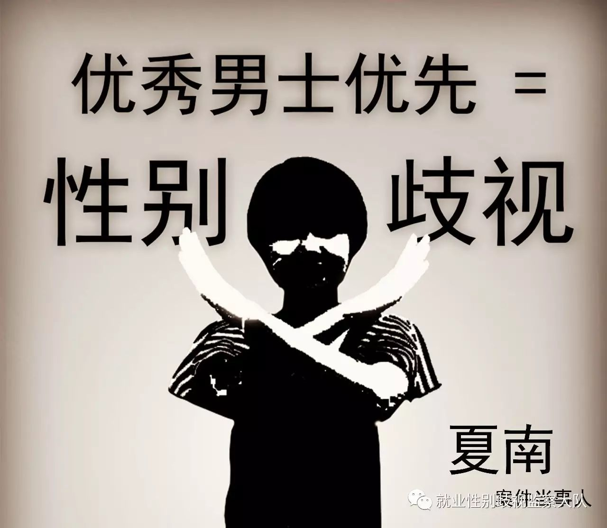
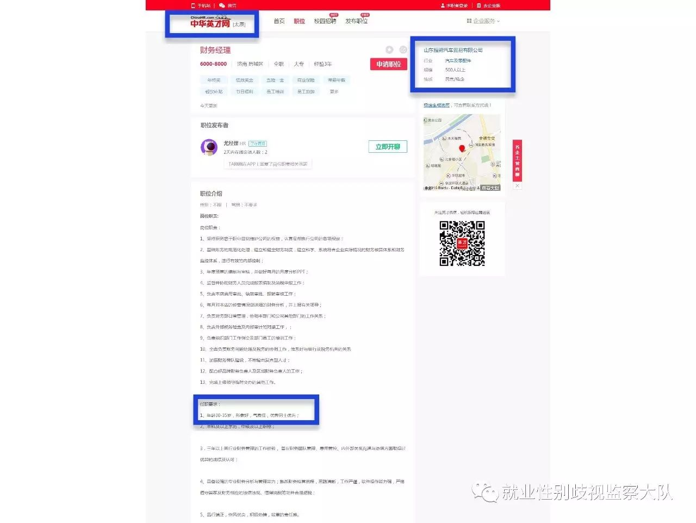
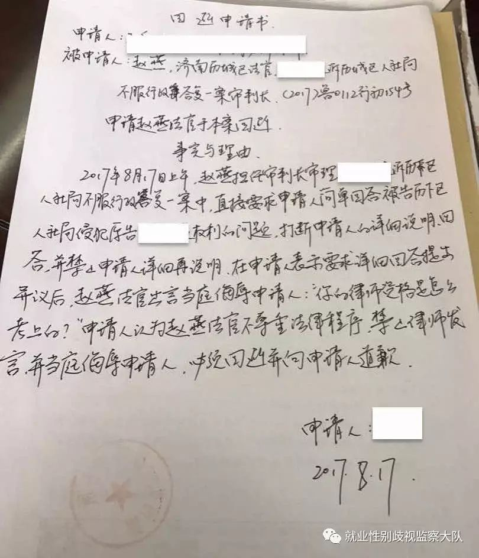
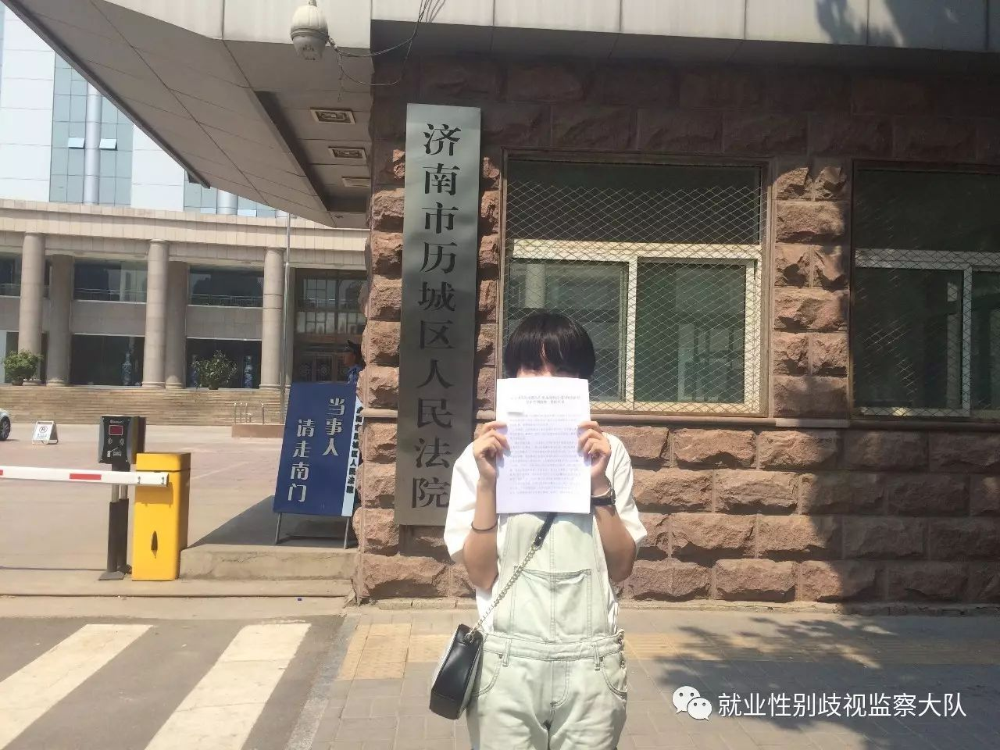

【一审第二次开庭过程】
2017年9月1日，山东就业性别歧视第一案进行第二次开庭审理。
在此次庭审中，案件第三人山东福骋汽车贸易有限公司（简称“福骋公司”）出庭提交新证据。福骋公司称夏南举报的“优秀男士优先”的财务经理一职，已在2017年4月招聘到了一位女职工。

(福骋公司招聘页面)
福骋公司认为虽然此招聘广告写明“优秀男士优先”，但不否认“优秀女士优先”。
原告代理律师王乐认为即使福骋公司的这一职位招聘了女职工，也无法掩盖此公司在招聘过程中已存在就业性别歧视，这仍然是一个指向性别的歧视行为。
王乐律师提出，目前无证据表明入职女职工不是以比其它男性优秀更多的条件被录用的。如果该女职工的录用标准高于男性，即构成了就业性别歧视之事实。
同时，此案被告济南市历城区人社局（简称“人社局”）承认其负有劳动监察职能，有义务保障劳动就业领域的就业平等。
案件当事人夏南希望能通过此案向社会传达男女平等的理念，并鼓励女性就业。她也希望法院可以支持其起诉请求，以改善劳动就业领域性别歧视问题。
根据法律程序，法官将会根据两次庭审的内容给出判决。
【法院道歉】
2017年8月17日，在此案一审第一次开庭过程中中，法官屡次限制律师发言，王乐律师认为法官无法公正审理案件，当庭申请法官回避审理此案。
当天，王乐律师向法院寄出控告信，要求法官道歉，并对历城区法院投诉机制进行整顿。
几天后，王乐律师收到法院决定书，法院认为申请法官回避理由不成立，并驳回回避申请。

（回避申请书）
在此次庭审结束后，济南市历城区人民法院主管行政的副院长和行政庭庭长找到了王乐律师，称经过调取庭审同步录音录像及其它调查，认为王乐律师的控告部分属实，对其他控告事项进行了解释，对法官的工作态度表示道歉，并承诺改善本院的投诉机制。
【案情简介】
案件当事人夏南是一位济南女大学生。
2016年12月8日，夏南发现山东福骋汽车贸易有限公司招聘财务经理一职时要求“优秀男士优先”。她认为这一要求存在性别歧视的问题，于是向当地人社局举报，并要求对该企业予以处罚。
该人社局随后作出答复，称经过调查，福骋公司确有“优秀男士优先”的招聘要求，但不存在性别歧视。同时人社局认为优秀男士优先，并非否认优秀女士优先。
夏南认为这种解释意味着在男女应聘者条件一致的情况下，福骋公司还是会优先录取男性不录取女性，两者很明显不是一样的录用标准，而女性的录用标准高于男性。

（夏南前往法院递交起诉状）
因不满人社局“优秀男士优先不是性别歧视”的错误认定，夏南将其上告法院。2017年8月17日，此案已经进行一审第一次开庭。
［欢迎各界媒体进行采访报道］
欲获取当事人和律师联系方式的记者朋友，可私信后台联系就业君。